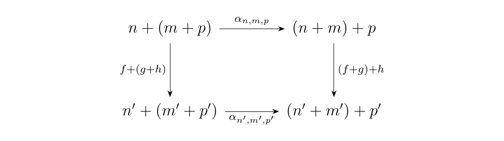

7.5. Braided and Symmetric Monoidal Categories
Braided and symmetric monoidal categories serve as some of the most fruitful and most studied environments of monoidal categories. The formulation of these categories may seem mysterious and random, but they have been recognized as important in their applications to physics. Specifically, braided monoidal categories were first defined by Joyal-Street in an attempt to abstract the solutions to the Yang-Baxter equation, an important equation of matrices in statistical mechanics. It turns out that braided monoidal categories are exactly the categorical environment one needs to describe the category of representations of a Hopf algebra \(**Rep**(H)\). This then allows us a machine which produces solutions to the Yang-Baxter equation, ultimately letting us describe families of such solutions. But it gets even more interesting: the Yang-Baxter equation turns out to be the necessary criteria to establish a representation of the Braid group; such a representation is a knot invariant, so this is something of interest to both mathematicians and physicists.
Before we dive into what exactly braided monoidal categories are, we'll introduce the concept of braids.
The \(n\)-th braid group \(B_n\) consists of braids on \(n\)-strands whose group product is braid composition. More rigorously,
where \((1), (2)\) are generator relations described below.
-
[1.] \(\sigma_i\sigma_j = \sigma_j\sigma_i\) whenever \(|i - j|>1\)
-
[2.] \(\sigma_{i+1}\sigma_i\sigma_{i+1} = \sigma_{i}\sigma_{i+1}\sigma_i\).
Relations (1) and (2) are imposed in order to reflect physical reality. Below the relations are pictured on a three strands.
The first two braids represent \(\sigma_3\sigma_1\) and \(\sigma_1\sigma_3\). Clearly, these are physically equal. Note however this would not work if they were adjacent, i.e., \(\sigma_2\sigma_1\ne\sigma_2\sigma_1\). Hence we set \(\sigma_i\sigma_j=\sigma_j\sigma_i\) for \(|i - j| > 1\). For the second pair of braids, it may take some staring to see that they are physically equal. As we shall see, the relation \(\sigma_{i+1}\sigma_i\sigma_{i+1} = \sigma_{i}\sigma_{i+1}\sigma_i\), called the braid relation, is of deep importance.
A Braided Monoidal Category \(\cc\) is a monoidal category \((\cc, \otimes, I)\) equipped additionally with a natural transformation, know as the "twist" morphism \begin{statement}{ProcessBlue!10}
\end{statement} such that the following diagrams commute for all objects \(A, B, C\) of \(\cc\). \begin{statement}{ProcessBlue!10} \ end{statement}
Note that just because we have a twist morphism, it is not necessarily the case that \(\sigma_{B,A}\circ\sigma_{A,B} = 1_{A\otimes B}\). That is, applying the twist morphism twice is not guaranteed to give you back the identity. This case is treated separately.
The canonical example of a braided monoidal category is the braid category \(\mathbb{B}\). This is the category where: \begin{description} \item[Objects.] All integers \(n \ge 0\). \item[Morphisms.] For any two integers \(m, n\), we have that
\end{description}
Composition in this category is simply braid composition. We can introduce a tensor
product \(\otimes\) on \(\mathbb{B}\) where on objects \(n \otimes m = n + m\)
while on morphisms \(\alpha \otimes \beta\) is the direct sum braid. The direct
sum braid is simply the braid obtained by placing two braids side-by-side.
\
 With an identity object being the empty braid, we see that \(\mathbb{B}\)
is a strict monoidal category. The associators and unitors are simply identity morphisms.
However, this category also have a natural braiding structure. For any two objects
\(n,m\), introduce the braiding
With an identity object being the empty braid, we see that \(\mathbb{B}\)
is a strict monoidal category. The associators and unitors are simply identity morphisms.
However, this category also have a natural braiding structure. For any two objects
\(n,m\), introduce the braiding
where on objects the addition is simply permuted; on morphisms, however, \(\sigma_{n,m}\) corresponds to the braid of length \(n + m\) as below. \begin{figure}[h!] \centering \def\height{5} \def\ptsep{0.7} \def\sep{5.333} \begin{tikzpicture} \tikzset{ position label/.style={ below = 3pt, text height = 2ex, text depth = 1ex } }
\draw[thick, decoration={brace}, decorate] (-0.2,0.3) -- (3,0.3); \draw[thick, decoration={brace}, decorate] (3.6,0.3) -- (6.7,0.3); \node at (1.4, 0.6) {\(m\)}; \node at (5.15, 0.6) {\(n\)};
\foreach \x in {5.333, 6.333, 7.333}{ \filldraw (\x\ptsep, 0) circle (0.07cm); \draw (\x\ptsep,0) -- (\x\ptsep - 5.333\ptsep, -\height); }
\node at (8.333\ptsep, 0) {\(\cdots\)}; \filldraw (9.333\ptsep,0) circle (0.07cm); \draw (9.333\ptsep,0) -- (9.333\ptsep - \sep*\ptsep, -\height);
\foreach \x in {0, 1, 2}{ \filldraw (\x\ptsep, 0) circle (0.07cm); \draw[line width = 2mm, white] (\x\ptsep,0) -- (\x\ptsep +\sep\ptsep, -\height); \draw (\x\ptsep,0) -- (\x\ptsep +\sep*\ptsep, -\height); }
\node at (3\ptsep, 0) {\(\cdots\)}; \draw (4\ptsep,0) -- (4\ptsep + \sep\ptsep, -\height); \draw[line width = 2mm, white] (4\ptsep,0) -- (4\ptsep + \sep\ptsep, -\height); \draw (4\ptsep,0) -- (4\ptsep + \sep\ptsep, -\height); \filldraw (4*\ptsep,0) circle (0.07cm);
\foreach \x in {0, 1, 2}{ \filldraw (\x*\ptsep, 0) circle (0.07cm); }
\foreach \x in {0, 1, 2}{ \filldraw (\x*\ptsep, -\height) circle (0.07cm); }
\node at (3\ptsep, -\height) {\(\cdots\)}; \filldraw (4\ptsep,-\height) circle (0.07cm);
\foreach \x in {0, 1, 2}{ \filldraw (\x*\ptsep, -\height) circle (0.07cm); }
\foreach \x in {5.333, 6.333, 7.333}{ \filldraw (\x*\ptsep, -\height) circle (0.07cm); }
\node at (8.333\ptsep, -\height) {\(\cdots\)}; \filldraw (9.333\ptsep,-\height) circle (0.07cm);
\node at (5,-1.2) {\rotatebox{-45}{\(\cdots\)}}; \node at (2.5,-4.3) {\rotatebox{-45}{\(\cdots\)}}; \node at (2.6,-0.7) {\rotatebox{45}{\(\cdots\)}}; \node at (5.1,-4) {\rotatebox{45}{\(\cdots\)}}; \end{tikzpicture} \end{figure}
It is a simple exercise to show that this satisfies the hexagon axioms; the task is simplified due to the fact that the associators are identities. While this category may seem like a boring example, it plays a critical role in demonstrating coherence for braided monoidal categories, something we will do later.
Let \(**GrMod**_R\) be the category of graded \(R\)-modules \(M = \{M_n\}_{n = 1}^{\infty}\). Recall from \ref{example_graded_R_modules} That \(**GrMod**_R\) forms a monoidal category. The tensor product of two graded \(R\) modules \(M =\{M_n\}_{n=1}^{\infty}\) and \(P = \{P_n\}_{n= 1}^{\infty}\) is the graded \(R\)-module \(M\otimes P\) whose \(n\)-th level is given by
We can additionally introduce a braiding on this category for each invertible elements \(k \in R\); specifically, we define the braiding \(\sigma_{M,P}: M \otimes P \to P \otimes M\) to be the graded module homomorphism whose \(n\)-th degree is
whenever \(m \in M_i\) and \(p \in P_j\). Observe that with this braiding we get that \ which clearly commutes. The second hexagon axiom is also easily seen to be satisfied: \ Thus we see that \(**GrMod**_R\) is more than just a monoidal category; each invertible element of \(R\) induces a braiding, making it a braided monoidal category as well.
If \(M\) is monoidal, we can recall from Example \ref{example_monoidal_functor_category} that the functor category \(\cc^M\) is also monoidal. If additionally we have that \(M\) is braided with a braiding \(\sigma_{A,B}: A\otimes B \to B \otimes A\), then we can extend this to a braiding on the functor category of \(\cc^M\) by defining, for two functors \(F,G: \cc \to M\), the natural transformation
defined pointwise for each \(A \in \cc\) as the morphism
One can then check that this natural transformation satisfies the braided hexagon axioms since the braiding \(\sigma\) in \(M\) does, so that \(\cc^M\) is additionally braided if \(M\) is additionally braided.
A Symmetric Monoidal Category \(\cc\) is a braided monoidal category such that, for the twist morphism,
Symmetric monoidal categories are basically monoidal categories which collapse the information which braided monoidal categories have the potential to encode. Their environment is much simpler, but at the cost of information.
Recall from the previous examples that \(**GrMod**_R\) can be treated as a braided monoidal category. A braiding is given an invertible element \(r \in R\). However, consider the idempotent elements of this ring, i.e., the elements \(r \in R\) such that \(r^2 = 1\). Then we see that these elements not only give rise to braidings
but these braidings have the property that \(\sigma_{M,P}\circ \sigma_{P,M} = 1_{M\otimes P}\), since \(r=1\). Hence the category of graded modules may be specially treated as symmetric monoidal categories whenever there is an idempotent element of the ring \(R\).
Recall from \ref{example:permutation_category} that the permutation category \(\mathbb{P}\) forms a monoidal category where objects are nonnegative integers and homsets are given by the symmetric groups. The monoidal product \(\otimes\) simply sums the object, while two permutations \(\tau \in S_n\) and \(\rho\in S_m\) are sent to the direct sum permutation \(\tau\otimes \rho \in S_{n+m}\) (this permutation simply horizontally stacks).
In this category, we can introduce a symmetric braiding \(\sigma_{n,m}: n+m \to m+n\) to be the unique permutation \(\sigma_{n,m} \in S_{n+m}\) pictured below. \ One thing to notice is that this is the underlying permutation of braid given in Figure \ref{figure:braiding_on_braid_category}. With the existence of this element of \(S_{n+m}\) for every pair of objects \(n,m\) in \(\mathbb{P}\), we see that the permutation category is actually symmetric monoidal.
A PROP, an acronym coined by Mac Lane for "Product and Permutation Category", is a symmetric monoidal category \(\mathbb{P}\) containing the category \((\mathbb{N}, 0, +)\).
Consider the category \(**FinSet**\), where the objects are natural numbers \(n\) and a morphism \(f: n \to m\) is a function from a set of size \(n\) to one of size \(m\).
Here, we necessarily include \(0\) as an object; this denotes the empty set. First we demonstrate that this is monoidal. Let \(n, m\) be any integers. Then we'll show that \(+: **FinSet**\times**Finset** \to **FinSet**\) is a bifunctor. First, we acknowledge that \(n + m \in **FinSet**\).
Next, consider the set of morphisms
Let \(S_k\) be the set of \(k\) elements. Now since \(f, g\) are functions, we know that \(f: S_n \to S_{n'}\) and \(g: S_m \to S_{m'}\) for some sets in Set.Then we can define \(f + g: (n + n') \to (m + m')\) to be the function in Set where
where
Hence \(f + g\) makes sense in FinSet as morphism \(f + g: (n + n') \to (m + m')\).
Now consider the morphisms \(f \circ h\) and \(g \circ j\). Observe that \(f\circ h + g \circ j : k + l \to n' + m'\). This is then the function
but note that
Hence we must have that \((f + g)\circ(h + j) = f\circ h + g \circ j\), so that we have that \(+\) is a bifunctor.
Now we show that this is a monoidal category. Define the natural isomorphisms
We can describe these functions in further detail. Observe that \(\alpha_{n, m, p}\) can be realized to be a function where
Elements of \(S_n \amalg(S_m \amalg S_p)\) will be either \((x, 0)\) where \(x \in S_n\), or \((x, 1)\) where \(x \in S_m\amalg S_p\). In turn, the elements of this set are of the form \((y, 0)\) where \(y \in S_m\) and \((y, 1)\) where \(y \in S_p\).
On the other hand, elements of \((S_n \amalg S_m)\amalg S_p\) are of the form \((x', 0)\) if \(x' \in S_n \amalg S_m\) or are of the form \((x', 1)\) if \(x' \in S_p\). Furthermore, elements of \(S_n\amalg S_m\) are of the form \((y', 0)\) if \(y' \in S_n\) \ and \((y', 1)\) if \(y' \in S_m\).
Now we can explicitly define \(\alpha_{n,m,p}\) as
and \(\lambda\) as
and \(\rho\) as
Note for both \(\lambda\) and \(\rho\), there is only one case for \((x ,i)\) since for \(\lambda\), \(i\) is never \(0\) and for \(\rho\), \(i\) is never 1.
All of these establish a bijection, and hence an isomorphism. Now to demonstrate that they are natural, consider \(f: n \to n'\), \(g: m \to m'\) and \(h: p \to p'\). First, we'll want to show that the diagram \  commutes, which we can do by a case-by-case basis. First we follow the path
and then show it is equivalent to the other path. \begin{description} \item[\(\bm{i = 0}\)] If the input is \((x, 0)\), we see that \(\alpha_{n,m,p}(x, i) = ((x,0),0)\). If this is fed into \((f + g) + h\), the output will be \((f + g)(x, 0)\), whose output will be \(((f(x), 0), 0)\).
However, suppose we first put \((x, 0)\) into \(f+ (g + h)\). Then we would have directly obtain \((f(x), 0)\). Feeding this into \(\alpha_{n', m', p'}\), we would get \(((f(x), 0), 0)\). Hence we obtain naturality in this case.
\item[\(\bm{i = 1}\).] Suppose now the input is \((x, 1)\). Then either \(x = (y, 0)\) with \(y \in S_m\) or \((y, 1)\) where \(y \in S_p\).
\begin{description} \item[\(\bm{y \in S_m}\).] Suppose \(x = (y, 0)\). Then we see that \(\alpha_{n,m,p}(x, 1) = ((y, 1), 0)\). Plugging this into \(( f+ g) + h\), we get
However, we also could have obtained this value by first starting with
\(f + (g + h)\). In this case,
Plugging this into \(\alpha_{n',m',p'}\), we then get that
Hence the two paths are equivalent.
\item[\(\bm{y \in S_p}\).] Suppose \(x = (y, 1)\), Then we have that \(\alpha_{n, m, p}((y,1), 1) = (y, 1)\). Sending this into \((f + g)+ h\), we get
However, we could have achieved this value by first plugging \(((y, 1),1)\) into \(f + (g + h)\):
Then sending this into \(\alpha_{n',m',p'}\), we get
Thus the two paths are equivalent. \end{description} Hence we see that this diagram does commute, so that \(\alpha\) is natural. \end{description} [Show naturality works for \(\lambda\) and \(\rho\).]
Now we show that these natural isomorphisms satisfy the monoidal properties. Specifically, we'll show that the diagram \ must commute. To do this, we consider how these functions are realized in Set. If we consider \((x, i) \in S_n\amalg(\varnothing \amalg S_m)\), we see that we have two cases to consider. \begin{description} \item[\(\bm{i = 0}\).] If \(i = 0\), then we see that \(\alpha_{n, 0, m}(x, 0) = ((x, 0), 0)\). Sending this into \(\rho_n + 1_m\), we get that \([\rho_m + 1_m]((x, 0), 0) = (\rho(x, 0), 0) = (x, 0)\).
On the other hand, we could obtain this value by directly sending \((x, 0)\) into \(1_n + \lambda_m\). Observe that \([1_n + \lambda_m](x, 0) = (1_n(x), 0) = (x, 0)\). Hence the diagram commutes for this case.
\item[\(\bm{i = 1}\).] If \(i = 1\), then our element is of the form \((x, 1)\). However, we know that \(x = ((x, 1), 0)\), since \((x, 1) \in 0 + m\). Thus observe that \(\alpha_{n, 0, m}((x, 1), 1) = (x, 1)\). Consequently, we get that \([\rho_n + 1_m](x, 1) = (1_m(x), 1) = (x, 1)\).
On the other hand, we can start instead be evaluating \([1_n + \lambda_m]((x, 1), 1) = (\lambda(x, 1), 1) = (x, 1)\). Hence the diagram commutes in this case. \end{description} Thus we see that this diagram holds for all naturals \(n, m\).